Spis treści
Test z użyciem programu dd
Wstęp
Test ten pozwala zmierzyć wydajność dysku pod względem szybkości odczytu i zapisu danych. Najlepszą formą pomiaru byłoby użycie dysku, czy partycji (np. /dev/sda6), jednakże ze względów praktycznych podczas testów wykorzystano plik znajdujący się w systemie plików. Użycie dysku/partycji pozwoli pomijąć funkcje związane z systemem plików (np. opóźnienie związane z czasem potrzebym na utworzenie odpowiednich wpisów i-node, bufory).
Przebieg i wnioski
Test wykonany programem dd polegał na odczycie, zapisie oraz odczycie i zapisie 1.1GB danych. Został wykonany na 7 komputerach z systemem Linux w wersji 3.16.0-23-generic. Wyniki zostały przedstawione w tabeli poniżej.
Tabela prezentująca szczegółowe wyniki testów w systemie Linux
| Nazwa komputera | Zapis (MB/s) | Odczyt (MB/s) | Odczyt i zapis (MB/s) |
|---|---|---|---|
| labc192 | 230,00 | 2457,60 | 96,80 |
| labc195 | 293,00 | 2457,60 | 84,90 |
| labc194 | 260,00 | 4300,80 | 92,20 |
| labc197 | 299,00 | 2560,00 | 85,90 |
| labc198 | 287,00 | 2355,20 | 87,70 |
| labc199 | 208,00 | 2457,60 | 213,00 |
| labc193 | 269,00 | 2355,20 | 106,00 |
Tabela podsumowująca ogólne wyniki testów w systemie Linux
| Zapis (MB/s) | Odczyt (GB/s) | Odczyt i zapis (MB/s) | |
|---|---|---|---|
| Średnia arytmetyczna | 262.33 | 2.70 | 110.08 |
| Odchylenie standardowe | 36.76 | 0.74 | 50.61 |
| Wartość maksymalna | 299 | 4.20 | 213 |
| Wartość minimalna | 208 | 2.30 | 84.90 |
Wykresy prezentujące ogólne wyniki testów

Wyniki pokazują, że odczyt danych z dysku jest zdecydowanie szybszy od zapisu i jednoczesnego odczytu i zapisu danych na dysku.
Test z użyciem programu Bonnie++
Wstęp
Test ten pozwala zmierzyć prędkość odczytu i zapisu danych z uwzględnieniem właściwości systemu plików. Do właściwości systemu plików możemy zaliczyć operacje na metadanych (np. operacje na i-node) podczas tworzenia, usuwania małych/dużych plików czy sprawdzaniu rozmiaru pliku. Część systemów plików jest zoptymalizowana do operacji na metadanych w pewnej kolejności, dlatego test bada również losowo występujące operacje na metadanych.
Przebieg i wnioski
Test polegał na pomiarze:
- prędkości odczytu i zapisu danych
- ilość możliwych do wykonania przeskoków w obrębie pliku w przeciągu sekundy
- liczby operacji na metadanych, które można wykonać w przeciągu sekundy.
Test został wykonany na siedmiu komputerach z systemem Linux (w wersji 3.16.0-23-generic), Windows (w wersji 10), FreeBSD (w wersji 10.2). Niestety nie każdy system operacyjny posiada wsparcie dla wszystkich testowanych systemów plików, dlatego:
- na systemie Windows wykonano testy tylko na systemie plików NTFS (w środowisku Cygwin)
- na systemie FreeBSD nie wykonano testu systemu plików ext4 (możliwe jest użycie ext4 tylko w trybie do odczytu)
Szczegółowe wyniki testów dla systemu Linux
| System plików | Nazwa komputera | Zapis - znak po znaku (K/sec) | Zapis - blokami | Odczyt - znak po znaku (K/sec) |
|---|---|---|---|---|
| ext2. | labc192 | 118 239,00 | 125 477,00 | |
| ext2. | labc195 | 116 777,00 | 128 413,00 | |
| ext2. | labc194 | 118 825,00 | 126 603,00 | |
| ext2. | labc197 | 119 015,00 | 127 316,00 | |
| ext2. | labc198 | 119 433,00 | 128 967,00 | |
| ext2. | labc199 | 119 512,00 | 125 656,00 | |
| ext2. | labc193 | 118 546,00 | 125 292,00 | |
| ext3. | labc192 | 114 036,00 | 128 015,00 | |
| ext3. | labc195 | 113 898,00 | 126 585,00 | |
| ext3. | labc194 | 114 478,00 | 129 410,00 | |
| ext3. | labc197 | 115 974,00 | 125 453,00 | |
| ext3. | labc198 | 115 619,00 | 126 750,00 | |
| ext3. | labc199 | 112 983,00 | 126 849,00 | |
| ext3. | labc193 | 115 273,00 | 126 352,00 | |
| ext4. | labc192 | 120 729,00 | 128 024,00 | |
| ext4. | labc195 | 121 131,00 | 126 955,00 | |
| ext4. | labc194 | 118 425,00 | 128 313,00 | |
| ext4. | labc197 | 120 800,00 | 125 610,00 | |
| ext4. | labc198 | 120 966,00 | 128 249,00 | |
| ext4. | labc199 | 120 684,00 | 127 978,00 | |
| ext4. | labc193 | 120 663,00 | 126 317,00 | |
| NTFS. | labc192 | 65 459,00 | 139 406,00 | 129 136,00 |
| NTFS. | labc195 | 64 823,00 | 159 036,00 | 129 755,00 |
| NTFS. | labc194 | 65 534,00 | 149 468,00 | 130 080,00 |
| NTFS. | labc197 | 65 622,00 | 161 580,00 | 129 233,00 |
| NTFS. | labc198 | 65 174,00 | 154 557,00 | 129 731,00 |
| NTFS. | labc199 | 66 683,00 | 155 275,00 | 129 778,00 |
| NTFS. | labc193 | 65 192,00 | 155 468,00 | 129 412,00 |
| ZFS. | labc192 | 45 947,00 | 60 488,00 | 130 314,00 |
| ZFS. | labc195 | 46 696,00 | 61 691,00 | 129 160,00 |
| ZFS. | labc194 | 45 874,00 | 71 779,00 | 130 693,00 |
| ZFS. | labc197 | 44 768,00 | 64 463,00 | 128 219,00 |
| ZFS. | labc198 | 45 794,00 | 66 781,00 | 129 537,00 |
| ZFS. | labc199 | 44 387,00 | 75 015,00 | 128 284,00 |
| ZFS. | labc193 | 45 378,00 | 65 261,00 | 129 734,00 |
Tabele prezentujące ogólne wyniki testów dla systemu Linux
| System plików | Zapis - znak po znaku (K/sec) | Zapis - blokami | Odczyt - znak po znaku (K/sec) | |
|---|---|---|---|---|
| Średnia arytmetyczna | ext2. | 118 621,00 | 126 817,71 | |
| Odchylenie standardowe | ext2. | 931,12 | 1 468,20 | |
| Wartość maksymalna | ext2. | 119 512,00 | 128 967,00 | |
| Wartość minimalna | ext2. | 116 777,00 | 125 292,00 | |
| Średnia arytmetyczna | ext3. | 114 608,71 | 127 059,14 | |
| Odchylenie standardowe | ext3. | 1 066,08 | 1 283,52 | |
| Wartość maksymalna | ext3. | 115 974,00 | 129 410,00 | |
| Wartość minimalna | ext3. | 112 983,00 | 125 453,00 | |
| Średnia arytmetyczna | ext4. | 120 485,43 | 127 349,43 | |
| Odchylenie standardowe | ext4. | 923,97 | 1 067,31 | |
| Wartość maksymalna | ext4. | 121 131,00 | 128 313,00 | |
| Wartość minimalna | ext4. | 118 425,00 | 125 610,00 | |
| Średnia arytmetyczna | NTFS. | 65 498,14 | 153 541,43 | 129 589,29 |
| Odchylenie standardowe | NTFS. | 588,31 | 7 291,10 | 338,57 |
| Wartość maksymalna | NTFS. | 66 683,00 | 161 580,00 | 130 080,00 |
| Wartość minimalna | NTFS. | 64 823,00 | 139 406,00 | 129 136,00 |
| Średnia arytmetyczna | ZFS. | 45 549,14 | 66 496,86 | 129 420,14 |
| Odchylenie standardowe | ZFS. | 777,72 | 5 250,51 | 942,74 |
| Wartość maksymalna | ZFS. | 46 696,00 | 75 015,00 | 130 693,00 |
| Wartość minimalna | ZFS. | 44 387,00 | 60 488,00 | 128 219,00 |
Tabele prezentujące szczegółowe wyniki dla systemu FreeBSD
| System plików | Nazwa komputera | Zapis - znak po znaku (K/sec) | Zapis - blokami | Odczyt - znak po znaku (K/sec) |
|---|---|---|---|---|
| ext2. | labc193 | 40 316,00 | 80 028,00 | 96 626,00 |
| ext2. | labc199 | 71 335,00 | 132 801,00 | 137 632,00 |
| ext2. | labc197 | 22 569,00 | 42 631,00 | 143 048,00 |
| ext2. | labc194 | 36 358,00 | 72 420,00 | 91 965,00 |
| ext2. | labc198 | 47 120,00 | 100 843,00 | 140 879,00 |
| ext2. | labc192 | 37 364,00 | 58 361,00 | 148 327,00 |
| ext2. | labc195 | 50 009,00 | 33 988,00 | 94 151,00 |
| ext3. | labc193 | 66 321,00 | 90 715,00 | 96 426,00 |
| ext3. | labc199 | 75 564,00 | 154 372,00 | 139 464,00 |
| ext3. | labc197 | 62 729,00 | 130 216,00 | 142 714,00 |
| ext3. | labc194 | 70 980,00 | 92 007,00 | 96 266,00 |
| ext3. | labc198 | 75 105,00 | 157 042,00 | 137 759,00 |
| ext3. | labc192 | 29 017,00 | 50 796,00 | 152 481,00 |
| ext3. | labc195 | 51 268,00 | 88 346,00 | 95 146,00 |
| NTFS. | labc193 | 16 639,00 | 29 490,00 | 93 762,00 |
| NTFS. | labc199 | 35 788,00 | 56 667,00 | 139 182,00 |
| NTFS. | labc197 | 37 656,00 | 42 633,00 | 143 313,00 |
| NTFS. | labc194 | 16 750,00 | 31 040,00 | 93 982,00 |
| NTFS. | labc198 | 34 746,00 | 59 046,00 | 140 760,00 |
| NTFS. | labc192 | 29 179,00 | 51 009,00 | 152 663,00 |
| NTFS. | labc195 | 16 383,00 | 30 229,00 | 94 514,00 |
| ZFS. | labc193 | 60 996,00 | 67 198,00 | 113 263,00 |
| ZFS. | labc199 | 82 590,00 | 140 289,00 | 138 966,00 |
| ZFS. | labc197 | 69 686,00 | 94 461,00 | 140 080,00 |
| ZFS. | labc194 | 62 814,00 | 78 415,00 | 176 382,00 |
| ZFS. | labc198 | 75 705,00 | 108 884,00 | 129 513,00 |
| ZFS. | labc192 | 21 133,00 | 66 929,00 | 173 555,00 |
| ZFS. | labc195 | 51 562,00 | 86 758,00 | 165 460,00 |
Tabele prezentujące ogólne wyniki testów dla systemu FreeBSD
| System plików | Zapis - znak po znaku (K/sec) | Zapis - blokami | Odczyt - znak po znaku (K/sec) | |
|---|---|---|---|---|
| Średnia arytmetyczna | ext2. | 43 581,57 | 74 438,86 | 121 804,00 |
| Odchylenie standardowe | ext2. | 15 094,79 | 34 266,46 | 26 006,87 |
| Wartość maksymalna | ext2. | 71 335,00 | 132 801,00 | 148 327,00 |
| Wartość minimalna | ext2. | 22 569,00 | 33 988,00 | 91 965,00 |
| Średnia arytmetyczna | ext3. | 61 569,14 | 109 070,57 | 122 893,71 |
| Odchylenie standardowe | ext3. | 16 619,87 | 39 272,83 | 25 636,28 |
| Wartość maksymalna | ext3. | 75 564,00 | 157 042,00 | 152 481,00 |
| Wartość minimalna | ext3. | 29 017,00 | 50 796,00 | 95 146,00 |
| Średnia arytmetyczna | NTFS. | 26 734,43 | 42 873,43 | 122 596,57 |
| Odchylenie standardowe | NTFS. | 9 833,34 | 12 891,13 | 27 009,27 |
| Wartość maksymalna | NTFS. | 37 656,00 | 59 046,00 | 152 663,00 |
| Wartość minimalna | NTFS. | 16 383,00 | 29 490,00 | 93 762,00 |
| Średnia arytmetyczna | ZFS. | 60 640,86 | 91 847,71 | 148 174,14 |
| Odchylenie standardowe | ZFS. | 20 160,41 | 26 072,07 | 24 000,01 |
| Wartość maksymalna | ZFS. | 82 590,00 | 140 289,00 | 176 382,00 |
| Wartość minimalna | ZFS. | 21 133,00 | 66 929,00 | 113 263,00 |
Tabele prezentujące szczegółowe wyniki dla systemu Windows
| System plików | Nazwa komputera | Zapis - znak po znaku (K/sec) | Zapis - blokami | Odczyt - znak po znaku (K/sec) |
|---|---|---|---|---|
| NTFS. | labc193 | 7 951,00 | 372 860,00 | 8 212,00 |
| NTFS. | labc199 | 8 190,00 | 8 217,00 | |
| NTFS. | labc197 | 8 160,00 | 285 439,00 | 8 228,00 |
| NTFS. | labc194 | 8 129,00 | 8 241,00 | |
| NTFS. | labc198 | 7 852,00 | 609 528,00 | 8 229,00 |
| NTFS. | labc192 | 8 138,00 | 8 223,00 | |
| NTFS. | labc195 | 8 109,00 | 8 236,00 |
Tabele prezentujące ogólne wyniki testów dla systemu Windows
| System plików | Zapis - znak po znaku (K/sec) | Zapis - blokami | Odczyt - znak po znaku (K/sec) | |
|---|---|---|---|---|
| Średnia arytmetyczna | NTFS. | 8 075,57 | 422 609,00 | 8 226,57 |
| Odchylenie standardowe | NTFS. | 124,90 | 167 674,21 | 10,18 |
| Wartość maksymalna | NTFS. | 8 190,00 | 609 528,00 | 8 241,00 |
| Wartość minimalna | NTFS. | 7 852,00 | 285 439,00 | 8 212,00 |
Niektóre wyniki pomiarów zostały pominięte ze względu na duży rozmiar tabeli. Są one dostępne w pliku ze szczegółowymi wynikami.
Wykresy prezentujące ogólne wyniki testów
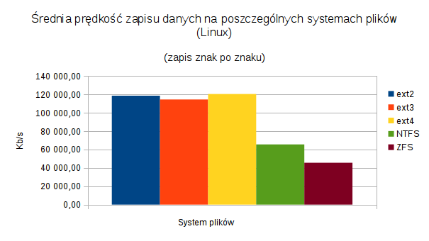
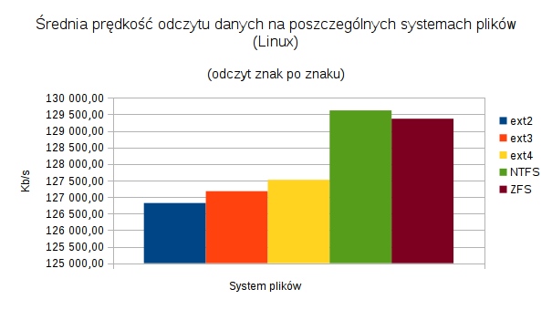
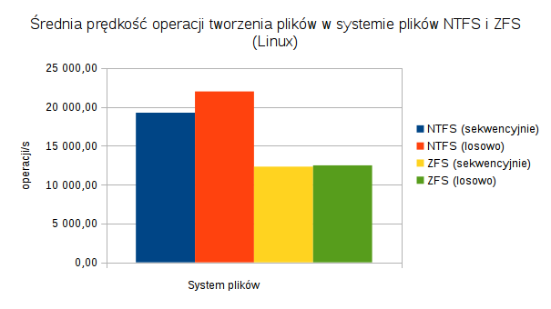
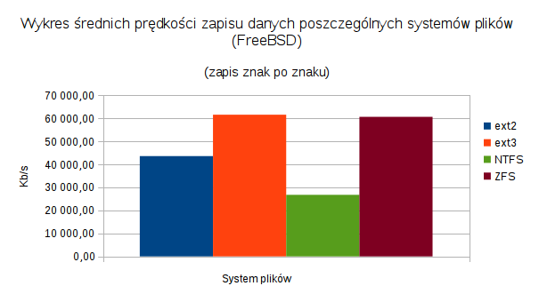
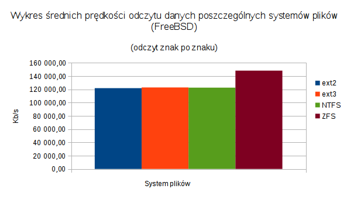
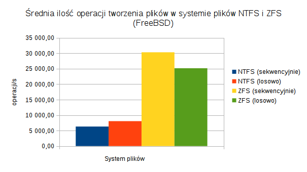
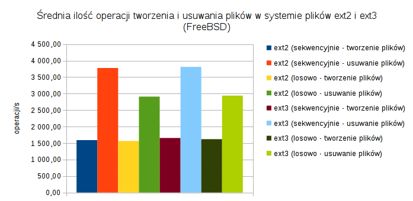
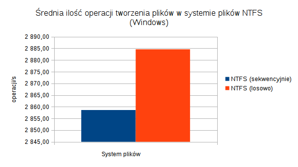
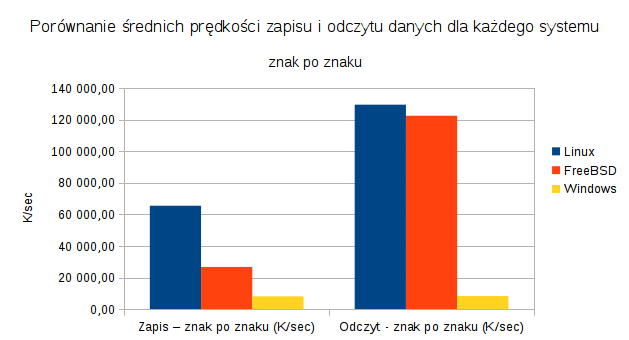
System plików NTFS w przypadku pomiaru ilości sekwencyjnie utworzonych plików w przeciągu sekundy wypadł zdecydowanie najgorzej na systemie Windows (może to wynikać z narzutów środowiska Cygwin), najlepiej zaprezentował się na systemie Linux.
Systemy plików z rodziny ext wypadły na systemie Linux najgorzej pod wzgledem prędkości odczytu danych znak po znaku, znacznie lepiej prezentował się NTFS oraz ZFS. Sytuacja jest odwrotna w przypadku zapisu danych znak po znaku, tu króluje rodzina ext, a NTFS i ZFS prezentują się gorzej. Na systemie FreeBSD w przypadku odczytu znak po znaku najlepiej wypadł ZFS, a w przypadku zapisu ext3 oraz ZFS.
Systemy plików ext2 oraz ext3 pod względem ilości opertacji tworzenia i usuwania plików w systemie FreeBSD nie różniły się znacząco pomiędzy sobą.
Test z użyciem programu tiobench
Wstęp
Ten test został opracowany na podstawie testu znajdującego się w pakiecie Phoronix Test Suite. Pozwala mierzyć prędkośc operacji odczytu, zapisu oraz czas reakcji (latencja). Operacje te wykonywane są w kilku wątkach jednocześnie.
Przebieg i wnioski
Test został wykonany na systemie Linux (w wersji 3.16.0-23-generic).
Tabela podsumowująca szczegółowe wyniki testów w systemie Linux
| Nazwa komputera | Prędkość odczytu (MB/s) | Prędkość zapisu (MB/s) | Latencja podczas odczytu (ms) - średnia | Latencja podczas zapisu (ms) - maksymalna | Latencja podczas odczytu (ms) - średnia | Latencja podczas zapisu (ms) - maksymalna |
|---|---|---|---|---|---|---|
| labc193 | 8 385,744 | 0,190 | 0,002 | 0,442 | 82,230 | 362,017 |
| labc199 | 5 503,577 | 0,195 | 0,002 | 1,160 | 79,959 | 1 341,896 |
| labc197 | 8 954,556 | 0,270 | 0,002 | 0,020 | 57,805 | 153,515 |
| labc194 | 8 960,573 | 0,206 | 0,002 | 0,029 | 75,895 | 191,972 |
| labc198 | 8 587,377 | 0,213 | 0,001 | 0,029 | 73,286 | 191,909 |
| labc192 | 8 188,332 | 0,215 | 0,002 | 0,031 | 72,633 | 316,418 |
| labc195 | 4 012,841 | 0,203 | 0,003 | 5,776 | 76,826 | 241,520 |
Tabela podsumowująca ogólne wyniki testów w systemie Linux
| Prędkość odczytu (MB/s) | Prędkość zapisu (MB/s) | Średnia latencja podczas odczytu (ms) | Maksymalna latencja podczas odczytu (ms) | Średnia latencja podczas zapisu (ms) | Maksymalna latencja podczas zapsu (ms) | |
|---|---|---|---|---|---|---|
| Średnia arytmetyczna | 8 001.52 | 0.22 | 0.002 | 0.31 | 71.74 | 469.82 |
| Odchylenie standardowe | 1 674.42 | 0.03 | 0.001 | 0.57 | 9.68 | 581.66 |
| Wartość maksymalna | 8 960.57 | 0.27 | 0.001 | 1.16 | 79.96 | 1 341.9 |
| Wartość minimalna | 5 503.58 | 0.2 | 0.002 | 0.02 | 57.81 | 153.52 |
Wykresy prezentujące ogólne wyniki testów
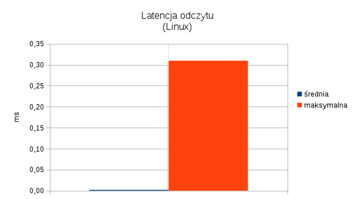 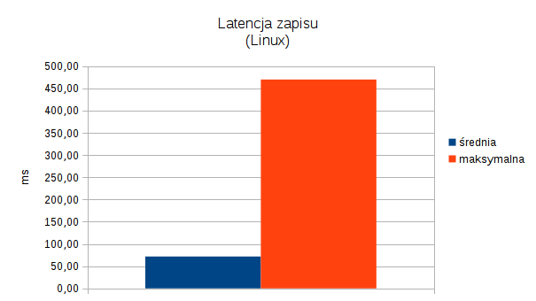
Wyniki testu pokazują, że średnia prędkość odczytu wyniosła 8001.52 MB/s, zapisu 0.22 MB/s. Latencja podczas zapisu jest zdecydowanie dłuższa, niż podczas odczytu.
Podsumowanie
Na podstawie wykonanych testów nie można stwierdzić, który komputer z jakim systemem operacyjnym i systemem plików poradził sobie najlepiej z przetwarzaniem danych. Wybór najlepszego rozwiązania zależny jest od praktycznego zastosowania i to pod jego kątem należy rozpatrywać wyniki testów. Pewne systemy plików radzą sobie lepiej z odczytem danych (np. rodzina ext), a pewne z zapisem danych (np. ZFS, NTFS). W przypadku rozwiązania, ktore będzie wykonowało dużo operacji usuwania/tworzenia plików najlepszym rozwiązaniem byłby ZFS na systemie FreeBSD.
Dodatkowe informacje
Szczegółowe wyniki
Szczegółowe wyniki pomiarów każdego z testów znajdują się w poszczególnych arkuszach kalkulacyjnych pliku wyniki.ods. Do jego otwarcia wymagany jest program LibreOffice.